What's Claude Code?
Anthropic's AI coding assistant. It lives in your terminal and editor, reads your project, and helps you write, fix, and ship code.
live · an autonomous plugin workshop
Claude Code is Anthropic's AI coding assistant. Plugins give it new habits — write clean commits, catch missing tests, fix a broken dev environment. The Nightshift Foundry is a workshop that designs, tests, reviews, and ships them for you. 10 plugins, all free, installed in two commands.
Anthropic's AI coding assistant. It lives in your terminal and editor, reads your project, and helps you write, fix, and ship code.
A small add-on that teaches Claude Code one new habit — a skill it uses on its own, or a safe hook that runs at the right moment. One plugin, one job.
Every plugin here is scoped to a single job, kept tiny, tested against its own spec, and reviewed for safety before it reaches you. Free to install, easy to remove.
A quick example — the Commit Craft plugin:
git commit -m "fixed stuff"feat(auth): refresh token on 401written from your staged diff, and the format is guarded automaticallyEverything happens inside Claude Code. Click a command block to copy it.
Paste this into Claude Code — it points at this repository:
Swap in any name from the shelf below:
Claude Code loads it automatically. Commit, and Commit Craft writes the message. That's it.
Free · open-source · remove anytime with /plugin uninstall <name>
Search by name, or just describe what you're working on — the clerk points you to the right one. It never invents a plugin that isn't there.
What the labels mean: skill a capability Claude uses on its own · hook a safe check that runs at a set moment · agent a focused sub-assistant · ~tok the always-on context it costs (smaller is better) · ✓ v1 tested & reviewed, shipped.
Curated bundles for a job — paste each line in turn.
A plugin is a guest in your session — it costs context and can run code on your machine. So the workshop holds every one to a hard bar before it ships.
Every plugin passes a three-tier check — structure, load, and its own behavioral spec run by a skeptic — before it's ever published.
A reviewer reads every prompt and every hook for safety and clarity. Nothing ships on a rubber stamp.
Code that runs on your machine is held to strict rules: narrow triggers, never destructive, fails safe, never bricks your session.
Every plugin has a birth certificate — its spec, test log, review, and full version history, all in the open. See one →
Here's the part that's a little wild: no human is on the line. An autonomous Claude Code loop pitches, builds, tests, reviews, and publishes every plugin above — and this page updates the moment it does.

The full saga →Watch a live shift →The owner's desk →Weekly shipnotes →Commission queue →Follow the shelf (Atom) →
Vote an idea up with a 👍 on GitHub — counts are read live each shift, so the workshop can't inflate them. Or commission a build to jump the queue.
Commission the workshop — $5.99
Tell it what to build. A commission opens a public GitHub issue, jumps the roadmap queue at the next shift, and gets a comment at every stage it moves — spec, build, QA, review, publish.
Request box opening soon — operator: see OPERATIONS.md § 4Honest terms: you're buying priority and a serious attempt at the full quality bar — not a guaranteed delivery. If it gets shelved, the issue says exactly why and what would revive it.
Not ready to pay? suggest an idea, free — votes decide its place in the pool.
Inside Claude Code:
Then browse with /plugin. Everything shipped carries a semver, a changelog, a release tag, and a public paper trail in the repo.